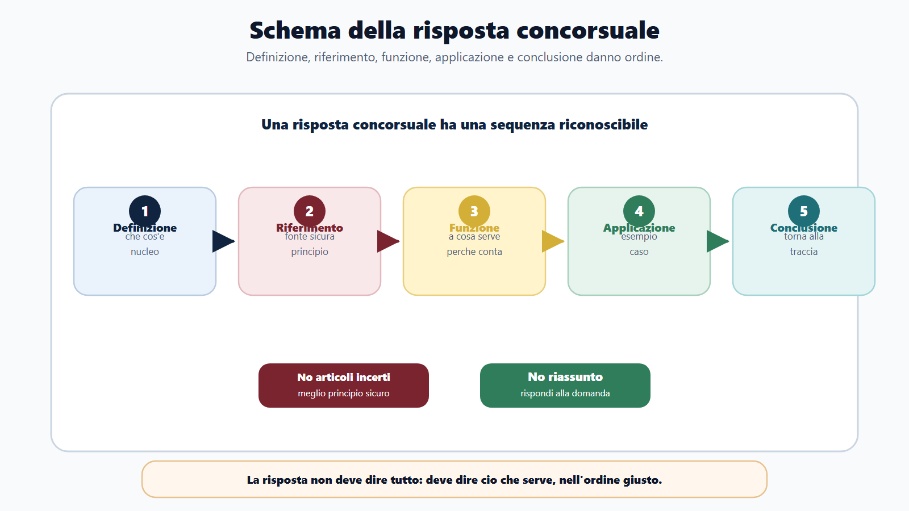
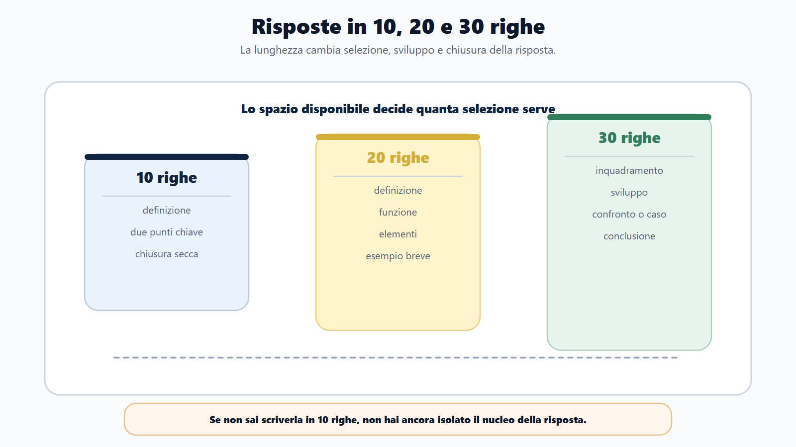
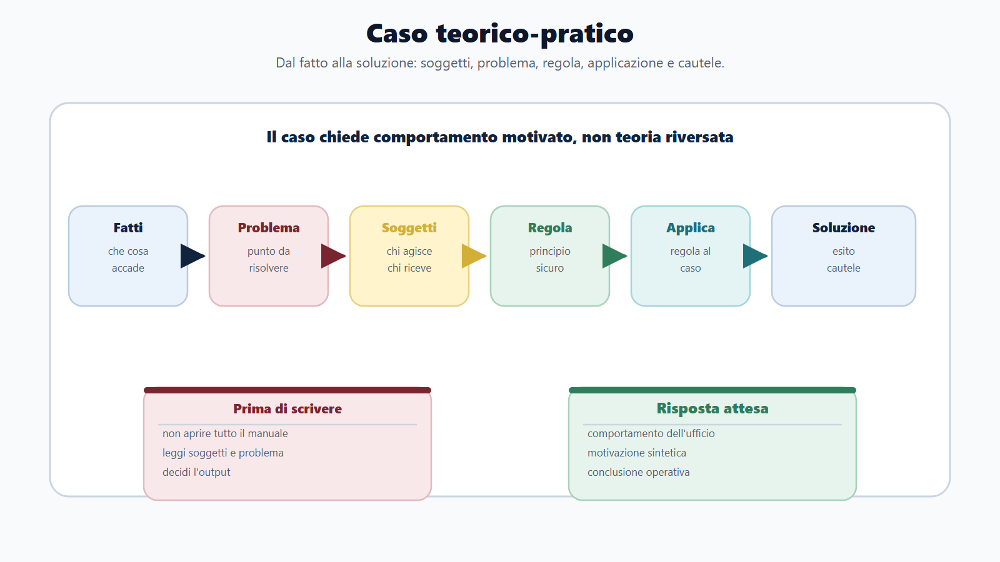
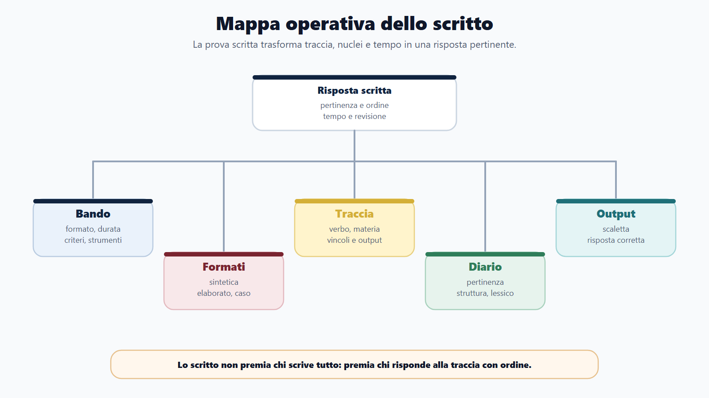
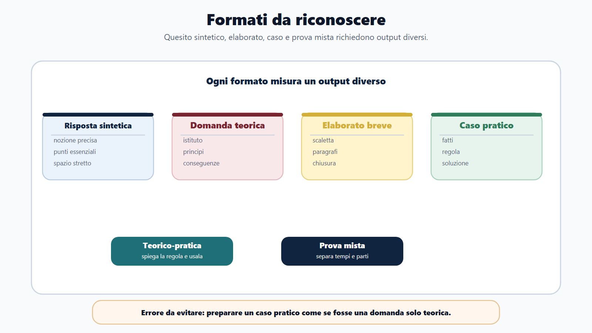
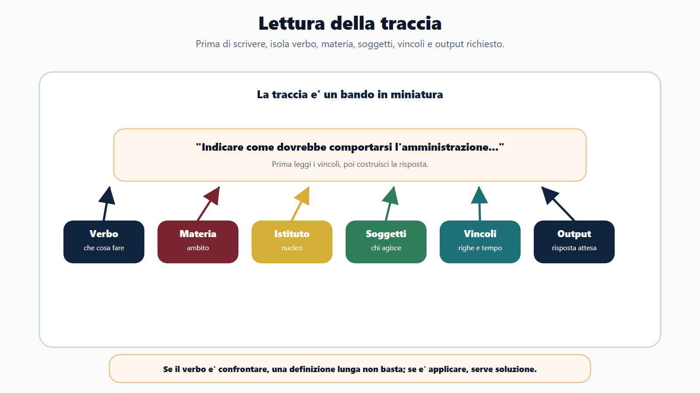

VOL-01 · Capitolo 15
Parte III · Allenarsi come in prova
La prova scritta
e teorico-pratica
Lo scritto non è un tema libero. Devi capire la traccia, delimitare il tema, scegliere le informazioni pertinenti, ordinarle e concludere. Una risposta efficace non è quella che contiene tutto: è quella che risponde alla domanda.
Schema
Schema risposta concorsuale

Schema
Risposte 10 20 30 righe

Schema
Caso teorico pratico

Schema
Mappa operativa scritto

Schema
Formati prova scritta

Schema
Lettura traccia

01 · Perché seleziona
Prima capisci che cosa chiede, poi scrivi
Molti preparano lo scritto come estensione della lettura: studiano capitoli, memorizzano definizioni e sperano di ricordare abbastanza. Ma lo scritto non chiede solo memoria. Chiede selezione. Se fai il contrario, rischi una risposta ricca e fuori bersaglio.
Che cos’è
Una prova in cui lo studio diventa forma: poche righe, quesito aperto, elaborato breve, caso amministrativo, risposta sintetica o soluzione motivata. Usa l’istituto nella forma richiesta, non nel formato del manuale.
A che serve in prova
Misura pertinenza, ordine, lessico e capacità di chiudere. La commissione non valuta la quantità in sé: valuta se hai risposto alla traccia, entro tempo e spazio, con riferimenti sicuri.
Svuotare il manuale mentale sulla pagina. La traccia chiede un punto; il candidato apre tutto. È l’errore più comune, e spesso costa più di una lacuna.
02 · BANDO
Il formato decide l’allenamento
Preparare tutti i formati nello stesso modo è un errore. La teoria va studiata, ma poi deve diventare forma. Il bando dice quale output ti viene chiesto.
| Che cosa controlli | Prodotto | Se la salti | |
|---|---|---|---|
| B — Bando | Tipo di scritto, materie, durata, criteri, soglie, strumenti ammessi. | Scheda formato scritto. | Alleni un elaborato che la prova non chiede. |
| A — Aree | Teoria, casi, atti, quesiti aperti, profilo specifico. | Mappa delle tracce possibili. | Studi un unico schema per tutte le tracce. |
| N — Nuclei | Definizioni, principi, procedure, confronti, casi ricorrenti. | Schemi di risposta. | Parti dalla prima frase e ti perdi a metà. |
| D — Diario | Pertinenza, struttura, lessico, tempo, incompletezza. | Registro elaborati. | Ripeti gli stessi difetti in ogni simulazione. |
| O — Output | Risposte in righe, casi risolti, scalette, atti, simulazioni. | Elaborati corretti. | Confondi «aver letto» con «saper scrivere». |
03 · Formati
Sei output, sei metodi
Il bando può usare formule diverse. Se il verbo è «confrontare», una definizione lunga non basta. Se è «applicare», un riassunto teorico non basta. Se è «indicare», non devi trasformare la risposta in trattato.
| Formato | Che cosa misura | Metodo |
|---|---|---|
| Risposta sintetica | Conoscenza essenziale e precisione. | Definizione, funzione, punto chiave, esempio. |
| Domanda teorica | Capacità di spiegare un istituto. | Inquadramento, principi, disciplina, conseguenze. |
| Elaborato breve | Ordine e sviluppo argomentativo. | Scaletta, paragrafi, collegamenti, chiusura. |
| Caso pratico | Applicazione a una situazione. | Soggetti, competenza, fatti, regole, soluzione. |
| Teorico-pratica / mista | Teoria più applicazione, o più output insieme. | Spiegare la regola e usarla; gestire i tempi delle parti. |
04 · Traccia
La traccia è un bando in miniatura
Prima di scrivere, evidenzia mentalmente il verbo operativo, la materia, l’istituto, i soggetti, il contesto, i limiti di spazio, le richieste pratiche e il criterio implicito di valutazione. Sono vincoli, non suggerimenti.
| Verbo | Che cosa vuole | Che cosa non basta |
|---|---|---|
| Definire / indicare | Nozione precisa, elenco essenziale. | Un trattato o una parafrasi vaga. |
| Illustrare | Struttura e funzione. | Solo la definizione. |
| Confrontare / distinguere | Differenze e somiglianze, senza confusione tra istituti. | Due definizioni affiancate senza criterio. |
| Applicare / valutare | Usare la regola nel caso e motivare una scelta. | Un riassunto teorico senza soluzione. |
| Redigere | Atto, schema o risposta operativa. | Un tema sulla materia invece dell’atto. |
05 · Schema
Definizione, riferimento, funzione, esempio, conclusione
Non devi citare norme a caso. Un riferimento incerto può danneggiare la risposta. Meglio richiamare un principio sicuro che inventare un articolo. La precisione falsa è peggiore della sobrietà.
Definizione
Che cos’è il tema, in una frase che la commissione possa sottolineare.
Riferimento
Principio o fonte solo se lo conosci con sicurezza. Altrimenti disciplina pertinente, senza numero inventato.
Funzione
A che serve nell’ordinamento o nell’ufficio. Non è un dettaglio: è il senso della risposta.
Applicazione
Esempio, caso o confronto. Poi chiusura che torna alla traccia: «Per queste ragioni…», «Nel caso prospettato…».
Traccia: «Illustrare il ruolo del responsabile del procedimento». Non serve tutto il procedimento. Serve definizione, funzione di guida e coordinamento, rapporto con istruttoria e proposta, utilità per trasparenza e individuazione del referente.
06 · Spazio
Dieci, venti, trenta righe: tre strategie
La lunghezza cambia la strategia. Un candidato che sa scrivere solo risposte lunghe rischia di non rispettare lo spazio. Un candidato che sa scrivere solo definizioni brevi rischia di non sviluppare. Allenati su tutte e tre.
Nucleo nudo
Definizione, due punti chiave, chiusura. Se questa versione non è chiara, non hai ancora isolato il nucleo.
Sviluppo breve
Definizione, funzione, elementi, esempio breve. È la misura più frequente nelle risposte sintetiche.
Sviluppo pieno
Inquadramento, sviluppo, confronto o caso, conclusione. Se è dispersiva, il problema è la scaletta, non lo spazio.
07 · Teorico-pratica
Usare la regola, non solo spiegarla
La prova teorico-pratica può presentarsi come caso, scenario, quesito applicativo o richiesta di passaggi operativi. Il caso dell’istanza incompleta a un ufficio comunale non chiede tutto sul procedimento: chiede il comportamento dell’amministrazione.
| Passaggio | Che cosa fai |
|---|---|
| Fatti, problema, soggetti | Che cosa è accaduto, quale questione amministrativa, chi è coinvolto. |
| Regola o principio | Solo il quadro essenziale, senza divagare sul manuale. |
| Applicazione | Come la regola opera in quel caso, non in generale. |
| Soluzione e cautele | Comportamento concreto; termini, dati, tracciabilità, competenza. |
«Il procedimento amministrativo è molto importante e la pubblica amministrazione deve sempre rispettare la legge». Non è falsa, ma non entra nel caso. Parti dai fatti rilevanti.
08 · Atto
Redigere senza inventare
Se la traccia usa il verbo «redigere», cerchia tre parole: destinatario, atto richiesto, risultato atteso. Non completare con la fantasia ciò che la traccia non fornisce. Usa formule neutre: «ai sensi della disciplina applicabile», «l’ufficio competente», «entro il termine indicato». Un riferimento normativo inesatto è più dannoso di una formula prudente.
| Formato | Quando | Irrinunciabile |
|---|---|---|
| Comunicazione / integrazione | Informare o chiedere elementi mancanti. | Oggetto, pratica, cosa manca, termine, canale, ufficio competente. |
| Nota istruttoria | Rappresentare fatti a un responsabile o ad altro ufficio. | Fatti verificati, elementi mancanti, proposta operativa. |
| Verbale | Documentare attività, incontro, accertamento. | Data, luogo, soggetti, attività, esito, sottoscrizione. |
| Schema di determinazione | La traccia identifica il competente e chiede una decisione. | Presupposti, motivazione essenziale, dispositivo, adempimenti. |
09 · Tempo e lessico
Scaletta in tre minuti, revisione nel dieci per cento
Prima di scrivere, dedica pochi minuti alla scaletta: tema e definizione, regola sicura, due o tre elementi, applicazione o confronto, conclusione. È tempo guadagnato. Se la prova contiene più quesiti, non sacrificare tutto per il primo.
Quote di tempo
Lettura tracce 5–10%. Scaletta 10%. Scrittura 70–75%. Revisione 10%: pertinenza, frasi incomplete, ripetizioni, termini impropri, salti logici. Meglio risposte complete e proporzionate che un capolavoro iniziale e due risposte deboli.
Precisione senza rigidità
Evita «la legge dice», «la PA deve fare bene», «il cittadino ha diritto a tutto», «si procede normalmente». Preferisci buon andamento, ufficio competente, istruttoria, motivazione, esito comprensibile. Precisione non significa lunghezza: significa il termine giusto.
Dopo ogni risposta controlla pertinenza, struttura, completezza, precisione, applicazione, tempo, revisione. Non correggere solo il contenuto: correggi il modo in cui costruisci la risposta.
10 · Caso guidato
Istanza incompleta: dal tema all’atto
Un cittadino presenta una domanda incompleta per un contributo comunale. Se la traccia chiede di illustrare, rispondi sul comportamento. Se chiede di redigere, produci la richiesta di integrazione. Non inventare data, pratica o articoli assenti dalla traccia.
Comportamento
Verificare che cosa manca e se è essenziale. Non ignorare l’istanza né respingerla automaticamente. Comunicare integrazione, termini e modalità. Tracciare. Se non si sana, adottare l’esito previsto, motivandolo.
Richiesta di integrazione
Oggetto, riferimento alla domanda, elementi necessari, invito a trasmettere, termine, canale, prosecuzione secondo disciplina applicabile, ufficio competente e responsabile del procedimento.
Scrivere un tema sulla materia invece dell’atto richiesto. Se la traccia chiede una richiesta di integrazione, non basta spiegare il procedimento: devi produrre una comunicazione che il cittadino possa capire e che l’ufficio possa utilizzare.
11 · Verifica
Due domande da saper spiegare
Che cosa rende efficace una risposta scritta in un concorso?
Una risposta efficace è pertinente, ordinata e proporzionata. Parte dalla traccia, definisce il tema, richiama solo riferimenti sicuri, spiega la funzione dell’istituto e, se richiesto, lo applica al caso. Deve essere chiara, leggibile e conclusa, non un elenco disordinato di nozioni. Nella redazione di un atto si distinguono presupposti, valutazione, dispositivo e chiusura.
Una risposta più lunga è sempre migliore?
No. Una risposta lunga può essere debole se non risponde alla traccia. Nello scritto conta la selezione: inserire ciò che serve, nell’ordine giusto, entro il tempo e lo spazio disponibili. Una risposta senza conclusione, poi, sembra sospesa anche quando il contenuto è corretto.
12 · Mini-esercizio
Tre versioni, poi un atto breve
Scegli un argomento già studiato. Scrivi tre versioni. Poi trasformane una in comunicazione, nota istruttoria, verbale o schema di provvedimento. Se la versione da dieci righe non è chiara, non hai isolato il nucleo.
| Versione | Vincolo | Che cosa stai allenando |
|---|---|---|
| 10 righe | Definizione e due punti essenziali. | Selezione del nucleo. |
| 20 righe | Definizione, funzione, elementi, esempio. | Sviluppo senza dispersione. |
| 30 righe | Inquadramento, sviluppo, applicazione, chiusura. | Scaletta e proporzione. |
| Atto breve | Destinatario, oggetto, risultato; niente dati inventati. | Forma amministrativa, non tema. |
13 · Da tenere ferme
Cinque regole, con il perché
1. Lo scritto non premia chi scrive tutto, ma chi risponde alla traccia, perché la commissione valuta pertinenza e selezione, non il volume.
2. Ogni risposta deve avere definizione, funzione, sviluppo e chiusura, perché senza struttura anche i contenuti corretti restano illeggibili.
3. Nel caso pratico devi applicare la regola, non solo spiegarla, perché la prova misura il prossimo passo corretto, non il capitolo del manuale.
4. Nella redazione di un atto distingui presupposti, valutazione, dispositivo e chiusura, perché la forma rende verificabile competenza e output.
5. I riferimenti normativi vanno usati solo se sicuri e pertinenti, perché un articolo inventato danneggia più di una formula prudente; scaletta, tempo e revisione sono parte della prova.
Prossimo capitolo
La prova orale
Dalla pagina alla voce: struttura, due minuti, vuoti di memoria, domande incrociate. L’orale si prepara parlando, non rileggendo.